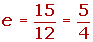
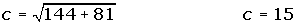

Ejercicios de la ecuación de la hipérbola
1Representa gráficamente y determina las coordenadas de los focos, de los vértices y la excentricidad de las siguientes hipérbolas.
1
2 
3
4 
2Representa gráficamente y determina las coordenadas del centro, de los focos, de los vértices y la excentricidad de las siguientes hipérbolas:
1 
2
3Hallar la ecuación de una hipérbola de eje focal 8 y distancia focal 10.
4El eje focal de una hipérbola mide 12, y la curva pasa por el punto P(8, 14). Hallar su ecuación.
5Calcular la ecuación reducida de la hipérbola cuya distancia focal es 34 y la distancia de un foco al vértice más próximo es 2.
6 Determina la ecuación reducida de una hipérbola que pasa por los puntos .
7 Determina la ecuación reducida de una hipérbola que pasa por el punto y su excentricidad es .
8Determina la ecuación reducida de una hipérbola sabiendo que un foco dista de los vértices de la hipérbola 50 y 2.
9Determina la posición relativa de la recta x + y − 1 =0 con respecto a la hipérbola x2 − 2y2 = 1.
10 Una hipérbola equilátera pasa por el punto (4, 1/2). Haya su ecuación referida a sus asíntotas como ejes, y las coordenadas de los vértices y los focos.
- 1
- 2
- 3
- 4
- 5
- 6
- 7
- 8
- 9
- 10
Ejercicio 1 resuelto
Representa gráficamente y determina las coordenadas de los focos, de los vértices y la excentricidad de las siguientes hipérbolas.
1



2 


3


4 




Ejercicio 2 resuelto
Representa gráficamente y determina las coordenadas del centro, de los focos, de los vértices y la excentricidad de las siguientes hipérbolas:
1 


2


Ejercicio 3 resuelto
Hallar la ecuación de una hipérbola de eje focal 8 y distancia focal 10.


Ejercicio 4 resuelto
El eje focal de una hipérbola mide 12, y la curva pasa por el punto P(8, 14). Hallar su ecuación.


Ejercicio 5 resuelto
Calcular la ecuación reducida de la hipérbola cuya distancia focal es 34 y la distancia de un foco al vértice más próximo es 2.

Ejercicio 6 resuelto
Determina la ecuación reducida de una hipérbola que pasa por los puntos .
Ejercicio 7 resuelto
Determina la ecuación reducida de una hipérbola que pasa por el punto y su excentricidad es .


Ejercicio 8 resuelto
Determina la ecuación reducida de una hipérbola sabiendo que un foco dista de los vértices de la hipérbola 50 y 2.
Ejercicio 9 resuelto
Determina la posición relativa de la recta x + y − 1 =0 con respecto a la hipérbola x2 − 2y2 = 1.


Ejercicio 10 resuelto
Una hipérbola equilátera pasa por el punto (4, 1/2). Haya su ecuación referida a sus asíntotas como ejes, y las coordenadas de los vértices y los focos.


 Ejercicios
Ejercicios